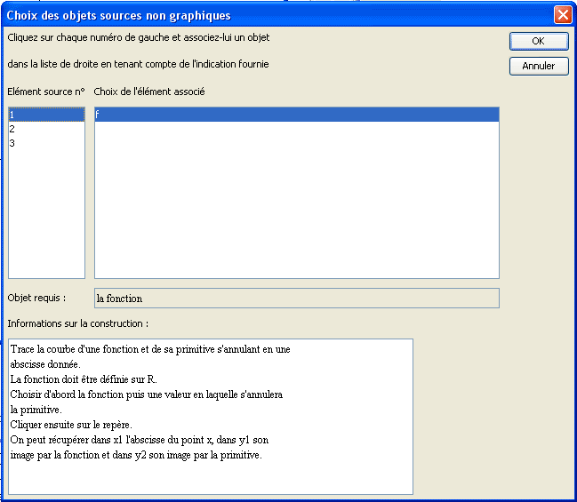
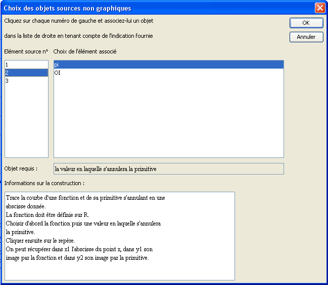
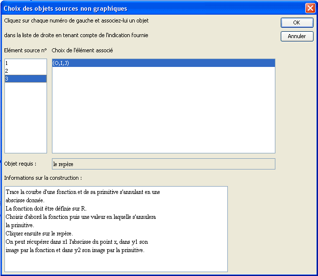
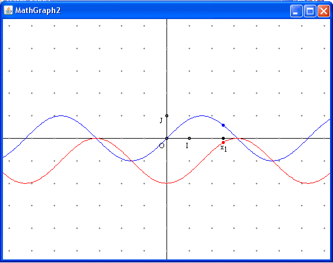

Presentación de las construcciones.
Las construcciones.
Las construcciones son una de las funcionalidades más potentes de MathGraph32.
Las construcciones son clases de figuras que se pueden incorporar en otras figuras.
Una construcción utiliza objetos de la figura en la cual se la incorpora, llamados objetos fuentes.
Utiliza de manera interna objetos (llamados objetos intermediarios) que servirán para crear nuevos objetos (llamados objetos finales) que podrán ser utilizados por los objetos que se crearán más tarde en la figura.
Los objetos fuentes y finales pueden ser objetos gráficos o de tipo cálculo. Los referenciales se consideran como objetos numéricos en la versión Java.
Para ser válida, una construcción debe respetar la siguiente norma:
Los objetos finales sólo deben construirse con objetos fuentes y cada uno de los objetos fuentes debe servir al menos una vez para crear un objeto final.
Una única excepción a esta norma: Si los objetos finales se construyen utilizando los objetos fuentes y una variable que no es un objeto fuente, la construcción se aceptan y la variable utilizada será parte de los objetos intermediarios.
Las construcciones se registran en archivos cuya extensión es mgc (tal archivo se llamará por ejemplo Tangentes.mgc).
Se carga una construcción en una figura con la ayuda del menú Construcciones - Incorporar una construcción de la figura desde un archivo.
Se utiliza una construcción ya cargada en la figura con ayuda del menú Construcciones - Implementar una construcción de la figura.
Se puede también utilizar una construcción sin cargarla en la figura con ayuda del menú Construcciones - Implementar una construcción desde un archivo.
Se guarda una construcción en un disco o cualquier otro soporte de registro con ayuda del menú Construcciones - Guardar una construcción de la figura en un archivo.
Cuando se aplicó una construcción en una figura, es posible obtener que todos los objetos intermediarios vuelvan a ser objetos normales utilizando el menú Construcciones - Fusionar las construcciones implementadas de la figura.
Cómo definir una construcción
Para definir una construcción, se comienza por elegir los objetos fuentes no gráficos y gráficas.
Es necesario tener en cuenta que en la puesta en práctica de la construcción los objetos fuentes no gráficos serán los que deberán designarse en primer lugar.
La elección de los objetos fuentes se hace mediante el menú Construcciones - Elección de los elementos fuentes luego no gráficos o gráficos.
Una vez elegidos los objetos fuentes, elegir los objetos finales no gráficos y gráficos. Sólo es posible elegir objetos exclusivamente construidos con los objetos fuentes especificados.
La elección de los objetos finales se hace mediante el menú Construcciones - Elección de los elementos finales luego no gráficos o gráficos.
Es posible cancelar las elecciones de los elementos fuentes y finales mediante el menú Construcciones - Reinicializar la construcción en curso.
Cómo implementar una construcción
Vamos a ilustrarlo con un ejemplo utilizando la construcción nombrada CurvaFuncionYPrimitiva que se proporciona con MathGraph32.
Comience por crear una figura nueva provista de un referencial luego una función f (por ejemplo f(x) = sen(x)).
Comenzamos por utilizar el menú Construcciones - Implementar una construcción desde un archivo.
Una caja de diálogo se abre en el directorio elegido en el menú Opciones - Preferencias, pestaña Directorio construcciones (o en el directorio habitual si ninguna elección se hizo en el menú Preferencias).
Ubicarse en el directorio que contiene esta construcción.
Observemos que al cliquear sobre una construcción (cuya extensión es mgc) la caja de diálogo nos informa sobre las funciones de esta construcción.
Cliquear sobre el nombre de la construcción luego sobre el botón Abrir.
Una caja de diálogo se abre que va a permitirles elegir los objetos fuentes.
El primer objeto fuente (n°1) es la función.
Elíjala como abajo.

El segundo objeto fuente es el valor que debe anular la primitiva.
Elijamos pi por ejemplo como abajo..

El tercer objeto fuente es el referencial.
Elijámoslo como abajo.

No hay ya más que validar.
Como nuestra construcción no espera objetos fuentes gráficos, se implementa inmediatamente.
Ahí se tiene por ejemplo el resultado:

Al apoyar en la tecla F6 (que sirve para ver los objetos numéricos creados) verán que las construcciones crearon un cálculo nombrado x que contiene la abscisa del punto ligado al eje de las abscisas, un cálculo nominado y que contiene f(x) y un cálculo nombrado y1 que contiene la imagen de x por la primitiva..
Copyright © <2009>, <Yves Biton>
Created with the Freeware Edition of HelpNDoc: Easily create PDF Help documents